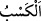
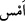

sözlerindendir ya da “Sen benim içimdekini bilirsin, halbuki ben senin zâtında
olanı bilmem.” (el-Mâide, 5/116) âyetinde olduğu gibi birbirine benzemesi (müşâkele)
yoluyla söylenmiştir.
“ mal kazanmak gibi insanın faydasına olan şeyi elde etmek için çalışıp gayret
göstermesidir. İnsanın faydasına zannedip zararına olan şeyi elde etmek için çalışması
da bu kelimeyle anlatılır. “ içinde bulunduğun günün peşinden gelen gündür. “
de içinde yaşadığın günden bir gece önceki gündür.
Yâni insan hayır mı, şer mi işleyeceğini, başarılı mı başarısız mı olacağını bilemez.
İnsan bazen hayır işlemeye azmeder; fakat şer olanı yapar. Bazen de bunun tersi olur.
İnsan, planlamasını yaptığı ve o uğurda gücünü harcadığı halde bile, kendi kazancını
bilme imkânı bulamayınca, kendi dışındaki bir şeyi, ona âid herhangi bir delil olmadan
bilmesi daha uzak görülür. Aynı şekilde yakınlığına rağmen yarın olacak şeyi
bilemeyince, ondan sonra olacak şeyleri elbette hiç bilemez.
Bir kimse işinin, ahvâlinin nasıl olacağını bilmez;
Kalan ömründe başına neler geleceğini bilmez.
Bütün bunları, ilmi her şeyi kuşatmış,
Mâzî ile istikbâl katında eşit olan Allah bilir ancak.
“Yine hiç kimse” ne zaman öleceğini bilemediği gibi, çarelerine başvursa bile
“nerede” karada mı, denizde mi, ovada mı, yoksa dağda mı “öleceğini bilemez.” Eğer
bilseydi belli bir yerde ve belli bir vakitte ölmek isterdi.
Rivâyete göre ölüm meleği Süleyman (a.s.)’ın yanına uğramıştı. Onunla beraber
oturan bir adama bakmaya başladı. Bunun üzerine adam Hz. Süleyman’a: “Bu kim?”
diye sordu. Süleyman (a.s.): “Ölüm meleği” dedi. Adam: “Sanki o, benim canımı almak
istiyor. Rüzgara emret de beni tâ Hind ülkesine götürsün” diye yalvardı. Hz. Süleyman
da adamın dediğini yaptı. Bu durum karşısında ölüm meleği Hz. Süleyman’a dedi ki:
“Ona sürekli bakmam, hayret ettiğimden dolayıdır. Çünkü bana o adamın canını ta
Hindistan’da almam emredilmişti. Halbuki o hala senin yanında duruyordu.”
el-Makâsıdü’l-hasene’de şöyle anlatılır: “Adamın biri “Allâh’ım, güneş meleğine
rahmet et” diye duâ ediyor ve bunu sürekli tekrarlıyordu. Güneş meleği gelip o adamı
ziyaret etmek üzere Rabbinden izin aldı. İnip adamın yanına geldi. Ona: “Sana gelmek
için Allah Teâlâ’dan izin istedim. Hâcetin nedir?” dedi. Adam: “Ölüm meleğinin senin
arkadaşın olduğunu öğrendim. Ondan benim ecelimi unutmasını ve ölümü bana
hafifletmesini istiyorum.” dedi. Güneş meleği onu aldı, götürdü ve güneşte kendi yerine
oturttu. Ölüm meleği geldi ve: “Kim o?” diye sordu. Güneş meleği: “Falan oğlun falan”
dedi. Ölüm meleği yanındaki listeye baktı ve: “Bu adamın, güneşte senin yerine
oturmadan ölmeyeceği yazılı” dedi. Güneş meleği: “Evet, o güneşte benim oturduğum
yere oturdu” dedi. Ölüm meleği: “Bizim vazifeli elçilerimiz onun canını aldılar. Çünkü
onlar vazifede kusur etmezler” dedi. Güneş meleği güneşe döndüğü zaman, adamın